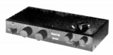
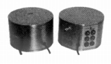
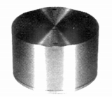
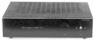

RUFFEL(ラッフェル)
【注意事項】詳細はわからないが、遅くとも1970年代後半には活動を初めていた小規模なブランド。現在（2018年1月）も活動を続けているようだ。同社のサイトによれば初期の製品は、珍しいレコード専用コントロールアンプだったようだ。（当サイト収録機種では、他にアキュフェーズのC-220がある。）1983年に一般的なコントロールアンプを発売し、その頃からヘッドアンプを扱うようになった。その後は、昇圧トランス＋フォノイコライザーアンプというスタイルに移行した。
�T.昇圧トランス・ヘッドアンプ・フォノイコライザーアンプ

(Dolphin)（番外：レコード専用コントロールアンプ） Dolphin Dolphin�U Dolphin�USpecial

(RH 2)
(RT1)(昇圧トランス） RT1

(RE3)（フォノイコライザーアンプ） RE3